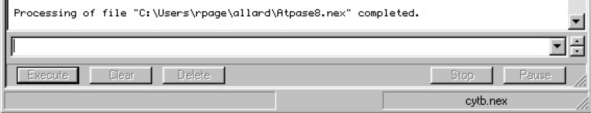
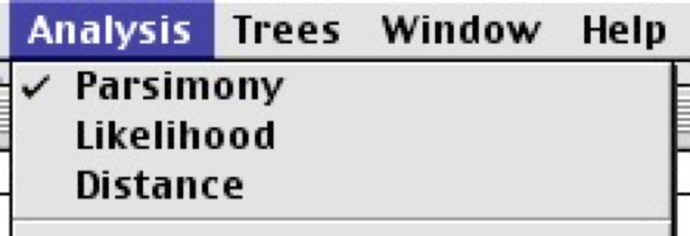
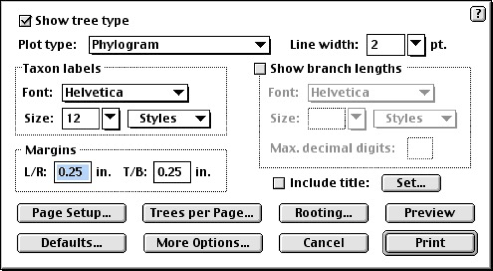
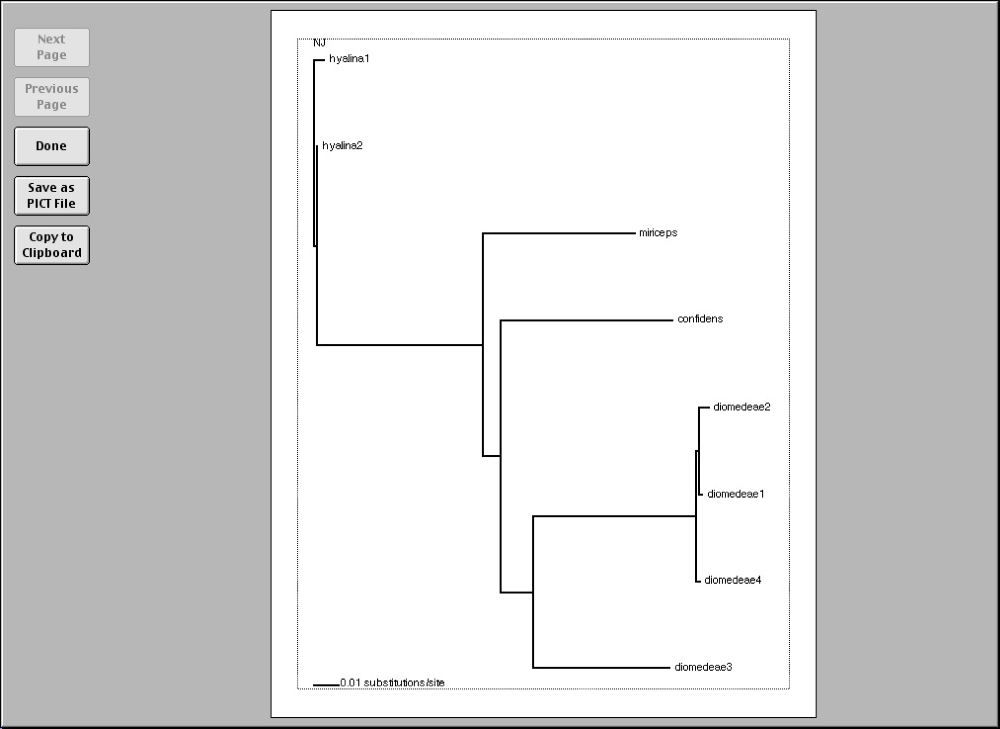

These short exercises are designed to give you quick introduction to phylogenetic analysis using PAUP*. Work through these exercises. They introduce building trees using different methods, how to view those trees, and get some idea of their robustness.
Download PAUP* from http://paup.phylosolutions.com/. You can also download the program here:
The graphical version of PAUP* is started by clicking on program icon:
Go to the file menu and open a data file. Once the data is read you can enter commands in the command line or using the menus.
All your results appear in the Display window.
The command line version (only option on more recent Macs) can be started in a terminal window. If you are a Windows user but like the command line you can type commands into the bottom of the display window.
To get a quick summary of commands type help. To get detailed help for a particular command type the name of the command followed by ?
One quick way is to do a heuristic search. Type the command hs or go to the Analysis menu and choose Heuristic Search. Accept the default settings and click on the Search button.
Type the command nj or choose Neighbor Joining/UPGMA from the Analysis menu.
Use the set criterion command. For example:
set criterion = parsimony set criterion = likelihoodor choose the corresponding option from the Analysis menu: 
The best tree (or trees) can be shown in the Display window issuing the command
showtrees.
In the graphical version you can go to the Trees menu and choose Print tree or Print NJ Tree… (if you computed a neighbor joining tree. You will see a dialog box like this:
PAUP can print the tree in a variety of styles. For now, just choose the Plot type Phylogram and click Preview. You will see something like this:
If you like what you see, click on the Done button. You will be taken back to the Print NJ tree dialog box shown above. Click Print and your tree will be printed.
If you’re not using the graphical version then you need to save the trees and print them using a tree viewing program such as Figtree. To do this
savetrees (or savetrees brlens=yes if you want branch lengths)Open the data file Hominoid mtDNA.nex in PAUP*. Build a parsimony tree using a heuristic search. View it in the display window (showtrees). If you wish, save it to a file (savetrees) then view that file in Figtree (or print it from within PAUP).
For small numbers of sequences you can compute the parsimony score for all possible trees. Use the command alltrees to do this.
Q: What does the plot of tree lengths tell you? How confident are you that the shortest tree is the true tree?
Change the optimality criterion to likelihood (set criterion = likelihood). Find the maximum likelihood tree (hs). Is it the same as the parsimony tree?
The bootstrap is a commonly used way of assessing how robust a tree is.
Set the optimality criterion to parsimony and run a bootstrap analysis (bootstrap). What do the numbers on the branches mean? What can you say about the three alternative hypotheses concerning relationships among the African apes?
Change the optimality criterion to likelihood, and redo the bootstrap. How do the results compare to parsimony?